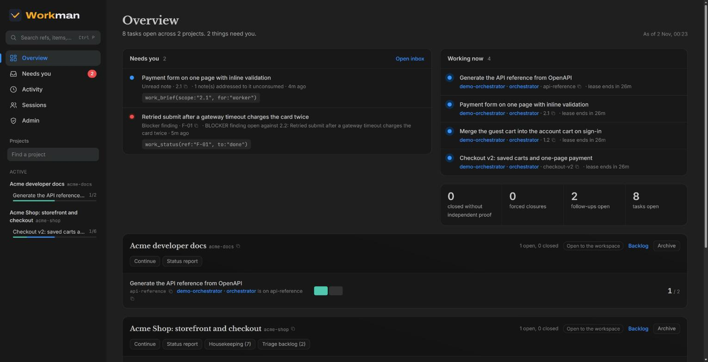
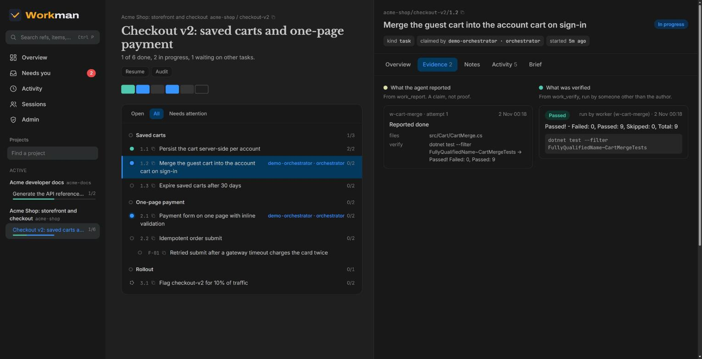

Project, run, phase
A project is a repo or any long-lived body of work. A run is one undertaking in it with a goal: a feature, a fix, a migration. Phases split a run into stages.
"Make this a run. Split it into schema, API, dashboard."


Workman 2.1 · MCP server, dashboard and skills · Apache-2.0
Workman is the work tracker your Claude Code agents talk to over MCP. You don't learn any tools. You say "plan this feature", "where were we?" or "did we cheat?", and the agent knows what each word means in the record.

Why
A long run fills the context, the session compacts, and the agent forgets what was decided and why. So you keep a PLAN.md and a LEDGER.md. A few weeks later they are dozens of files. The agent gets lost in them, drops follow-ups and breaks rules it can no longer find.
Workman moves all of that out of the context window and out of markdown, into one server. Every task, rule, decision and finding is its own record with a name and a link. A session that starts cold, or one that just compacted, asks for its brief and gets the goal, where things stand, the rules that bind it and its literal next step.
RUN checkout-v2 · branch feat/checkout-v2
GOAL Ship the new checkout behind a flag.
WHERE phase 1 of 3 · Saved carts · 1 of 3 done
NEXT work_status(ref:"1.2", to:"in_progress")
BINDING (2)
! C1 never write to the payments schema
from the cart service
· C2 run the suite with --filter CartMerge
ADDRESSED TO YOU (1)
an empty guest cart must change nothingThe Workman language
The server gives every session its instructions. You state the goal with these words, and the agent picks the calls.
A project is a repo or any long-lived body of work. A run is one undertaking in it with a goal: a feature, a fix, a migration. Phases split a run into stages.
"Make this a run. Split it into schema, API, dashboard."
One piece of work with done-criteria and a verification command. Workman refuses a task without both. Tasks can hold subtasks.
"Add a task for the migration. Break 2.3 into subtasks."
The check at the end of a phase: does the phase as a whole meet its goal, beyond each task passing on its own? Anything it finds becomes a finding.
"Gate phase 2 before you start phase 3."
Every item has a ref (2.3, checkout-v2/2.3) and a link that opens it on the dashboard. The backlog is where work goes that belongs to no run yet.
"What's 2.3? Link me the item. Put it on the backlog."
Something found wrong by a review, a gate or the agent itself. A blocker stops its target from closing; a minor one doesn't.
"Log that as a finding against 2.4. Is it a blocker?"
Something to do later, written down now so it isn't lost in the chat.
"Note it as a follow-up and carry on."
A decision only you should make, held as an item. Work that waits on it is blocked until you answer, and it shows up in your inbox.
"Make that a question for me."
A time-boxed exploration, or something that went wrong in operation. Both are items with a state, so they don't vanish.
"Open a spike: can we stream the export?"
Done, and how it is proven
Criteria describe outcomes ("the export streams 1 GB under 200 MB of memory"), not activities. The verification command must be able to fail. A filter that only matches tests that already pass doesn't count.
"That command can't fail. Pick one that would."
Closing is refused unless every criterion is checked, someone other than the worker ran a passing verification, no child is open and no blocker targets the item. The refusal lists exactly what is missing.
"Why won't 2.3 close?"
A red-check proves that a test can fail: revert the fix, watch it go red, then put the fix back. A force closes past the guard, needs a reason, and stays in the audit for good.
"Red-check that test. Don't force anything."

What binds the work
A red line (never do X; do Y instead), a command ("tests run with pnpm test"), a stack fact, a domain rule, or generated code that is regenerated, never edited. Every brief in scope prints them with their ref.
"Make it a red line: never push to main; open a PR."
A decision taken on incomplete knowledge, with how sure the agent is, the cost of reversing it and when to look again. Past that point it shows up in every result until someone settles it.
"Record that as an assumption. Confirm A2, here's the proof."
A decision and its reason, a correction, a fact the next agent should not re-derive. A note can be addressed to an item, and whoever picks that item up reads it in their brief.
"Leave a note on 3.1 for whoever does it."
Starting work takes a leased claim, so two sessions never silently do the same task. A worker reports and verifies; an orchestrator plans, judges and closes. The server enforces the roles.
"You're the worker on this one. Don't close it."
Phrases
| You say | The agent |
|---|---|
| "Where were we?" | reads the brief and tells you the goal, where things stand and the next step |
| "Work the loop." | takes the next ready item, does it, verifies it itself, closes it, and repeats until something needs you |
| "Plan this feature." | checks the code first, then writes a run with tasks, criteria, verify commands, rules and questions, and stops for your approval |
| "Defer it to the backlog." | moves the item to the backlog with your reason. Nothing is dropped |
| "Step back." | questions each open item against the current code and the goal, and proposes what to keep, rewrite, merge, move or cancel |
| "Realign the rules." | checks every binding rule against the code and your later decisions, and proposes what to keep, reword or retire |
| "Did we cheat?" | compares what was reported with what was verified, and lists every gap without changing anything |
| "What's blocking?" | lists every blocked item, what it waits on, and who or what could free it |
Anything that changes many items at once is proposed first. The agent writes nothing until you say yes.
In practice
Where were we on checkout?
(reads the brief) Phase 2. 2.1 and 2.2 are done and verified, and 2.3 is ready. Assumption A2 is past its revisit date.
Check A2, then carry on.
Don't touch the generated client again. Regenerate it.
Shall I make that a red line? "Never edit src/gen/; run make gen."
Yes.
Done. It's rule C4, and every brief prints it.
Close the run.
The done guard refuses: a criterion on 2.5 is unchecked, and blocker F-03 is open. Fix F-03 and verify 2.5, or defer F-03 with a reason?
Should deleted users keep their invoices? I don't know yet.
I made that question Q1 and blocked 4.2 on it. It's in your inbox.
Keep them, anonymised.
Q1 is answered, the decision is recorded, and 4.2 is unblocked.
Words Workman doesn't use
/workman:import brings the old files in, minus the stale parts.Skills
/workman:planWrite the plan into the record: a goal, phases, criteria and a verify command per task. Then it stops and waits for you.
/workman:orchestrateFinish a plan too big for one context window. It delegates each task to a subagent, checks the result against the goal, and re-plans when needed.
/workman:controllerWork through a whole backlog. It briefs a fresh Claude for each unit, verifies what comes back itself, lands it and records the decision.
/workman:agentsLaunch named background sessions, talk to them over READY, BLOCKED and DONE, and get woken when one is stuck.
/workman:importRetire your plan files. It checks each item against the current code and imports only what is still true, with its source.
/workman:setupSelf-host in minutes: it pulls the image, starts Workman and Postgres in Docker, registers the server and proves that it answers.
One server for every machine and every teammate, at work.supraman.ai. You sign in in the browser, so there's no token to paste.
claude mcp add --transport http --scope user \
workman https://work.supraman.ai/mcpThen add the skills in Claude Code:
/plugin marketplace add getsupraman/workman
/plugin install workman@supramanStart a new session and ask "What's the brief?". On an empty server it walks you through your first project. Self-service sign-up, team invites and a free plan are coming.
Install the plugin as on the left, then run:
/workman:setupIt writes a local .env with random tokens, pulls ghcr.io/getsupraman/workman, starts it with Postgres on 127.0.0.1:5290 and registers it with browser sign-in. The model never sees a token. It also backs up and restores the database.
Running many sessions? Supraman signs each session it launches in to Workman and puts blocked items in its Inbox.